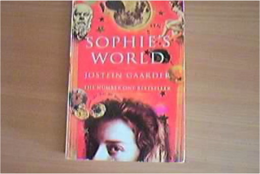

SOPHIE'S WORLD - A Novel about the History of PhilosophyJOSTEIN translated by MELLER, PAULETTE GAARDER   Lonely Planet New York City EncounterGinger Otis Lonely Planet New York City EncounterGinger Otis What Will Your New York Encounter Be?  Lonely Planet SeoulMartin Robinson Lonely Planet SeoulMartin Robinson Experience Seoul, Asia’s most intriguing city. Tour the grand royal palaces. Sing yourself hoarse in a noraebang (karaoke room). Stuff yourself with hearty beef and vegetable bibimbap. Indulge in exquisite traditional tea shops. This authoritative, bestselling guidebook will take you to the heart of Korea’s captivating capital. |


 Made with Delicious Library
Made with Delicious LibrarySpringfield, State zipflap congrotus delicious library Doddridge, Edward